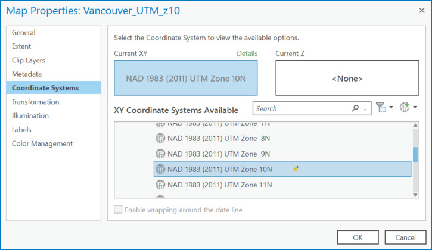

Exercise 3: Project Your Data
1 Open the Vancouver UTM Z10 map tab.
We want to project this data from a geographic into a projected coordinate system using a projection that is more appropriate for this area.
The standard projection used by the City of Vancouver is called Universal Transverse Mercator (UTM) Zone 10N.
The UTM projection divides the earth into 60 Zones as a system for assigning coordinates to locations on the surface of the earth.
Sixteen zones, from 7 to 22, cover Canada, and Vancouver falls in Zone 10 North. The zones are differentiated according to the northern and southern hemispheres.
2 With the cityVan_WGS1984 layer highlighted in Contents, click on the View tab at the top of your screen and select Geoprocessing.
This will open the Geoprocessing pane on the right side of your screen.
3 Type Project in the search bar and click on Project (Data Management Tools) in the results below.
This formatting is letting you know that Project is a tool located in the Data Management toolbox.
You should now see a new window representing the parameters necessary to run the Project tool.
4 In the first parameter box, click the dropdown arrow and select cityVan_WGS1984.
The input coordinate system is automatically populated.
5 In the Output Dataset box, click the folder next to it, navigate to your mapProjections.gdb, and name the output dataset cityVan_UTMz10.
6 Click on the sphere to the right of the Output Coordinate System window to select a coordinate system.
7 Click on Projected Coordinate System to expand this menu and then UTM> North America> NAD 1983 (2011) UTM Zone 10N.
8 Click on the star to the right of this coordinate system box to add this projection to your favourites, making it easier to use again in the future.
9 Click OK and accept the default transformation populating the Geographic Transformation parameter.
10 click Run at the bottom of the pane.
When it is done running, it will say Project completed and have a green checkmark next to it when the tool is done running.
The new projected dataset will be added to your map.
Reflection Question
(Click the text for the answer)
Why does it still look like it's in a GCS and it's units are appearing in decimal degrees?
This is because the data frame, or map, is in WGS1984, and ArcGIS Pro is projecting the data on-the-fly to line up with the data frame properties.Change the Map Frame’s Projection
11 Double-click on the map name in the Contents pane to open the data frame properties.
12 Under the Coordinate Systems section, select the NAD 1983 (2011) UTM Zone 10N from your favourites and click OK.

You should see the data transform before your eyes.
It’s not important to always know what projection you should be using.
You can google this information or consult a GIS person at the Research Commons.
What’s more important is:
- that you think to examine a dataset’s coordinate system information
- that if your data “doesn’t look right” or is not lining up with other data there is likely a projection issue
- that you understand the complexity of mapping a 3-dimensional, irregular surface on a 2-dimensional plane